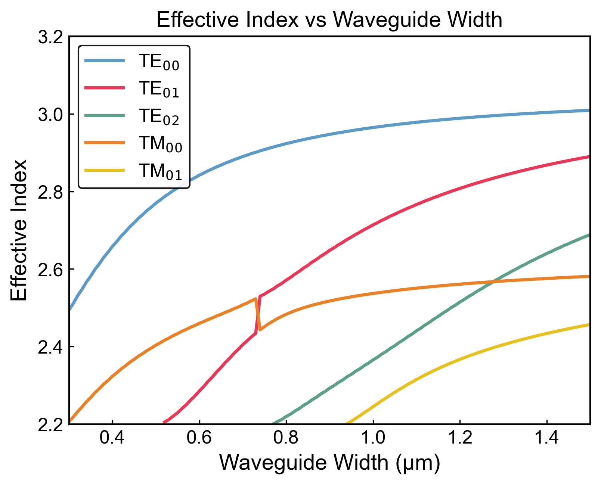

{
        id: 1,
        title: "Waveguide Dispersion",
        image: "waveguide.png",
        icon: "fas fa-microchip",
        description: "This project is an automated simulation script designed for waveguide mode analysis. It builds a waveguide structure and performs parameter sweeps to analyze the effective refractive index and optical loss for various modes.",
        tags: ["Photonics", "Waveguide"],
        startDate: "2025",
        endDate: "2025-7-17",
        premium: false,
        modalContent: `
          <div class="modal-content">
            <div class="modal-header">
              <h3 class="modal-title">Waveguide Dispersion</h3>
              <button class="modal-close">&times;</button>
            </div>
            <div class="modal-body">
              <div class="modal-image">
                
              </div>
              <div class="modal-description">
                <p>Automated structure generation:</p>
                <p>Creates a multi-layer stack including substrate (Si), BOX layer (SiO₂), slab, cladding layers, and trapezoidal waveguides.</p>
                <p>Dual scanning modes:</p>
                <p>Wavelength Sweep: Analyze modal properties over a specified wavelength range.</p>
                <p>Waveguide Width Sweep: Investigate how the waveguide width affects neff and loss.</p>
              </div>

              <div class="modal-image">
                
              </div>
              
              <div class="modal-section">
                <h3>Four Zero-Dispersion Wavelengths Technical Approach</h3>
                <p>The reported work [1] achieve four zero-dispersion wavelengths (ZDWs) by designing a silicon horizontal slot waveguide, where a silica slot is embedded between two silicon layers. By carefully adjusting the upper and lower silicon layer thicknesses, slot height, and waveguide width, the negative material dispersion of silicon and the engineered positive waveguide dispersion cancel each other at multiple wavelengths. Crucially, the mode transition from strip-like to slot-like (anti-crossing effect) introduces additional negative waveguide dispersion in the mid-band, enabling four ZDWs and a flattened dispersion profile.</p>
                <ul>
                  <li>[1] Lin Zhang, Qiang Lin, Yang Yue, Yan Yan, Raymond G. Beausoleil, and Alan E. Willner, "Silicon waveguide with four zero-dispersion wavelengths and its application in on-chip octave-spanning supercontinuum generation," Opt. Express 20, 1685-1690 (2012)</li>
                </ul>
              </div>
              
              <div class="modal-section">
                <h3>Performance Results</h3>
                <p>The code:</p>
                <div class="code-snippet">
                 <pre>
                  ####before runing the script, please check the material explorer! 
                  ####Please check the d-card can copy the right optical mode!

                  switchtolayout;
                  selectall; 
                  delete;
                  cleardcard;
                  nm = 1e-9;
                  um = 1e-6;

                  # parameters
                  work_mode = 2;      # 1=波长扫描 2=波导宽度扫描
                  cal_loss = 0;       # 1=计算损耗 0=不计算
                  number_mode = 5;    # 计算的模式数，最多5
                  mode_label = {"TE00","TE01","TE02","TM00","TM01"};

                  lamda         = 1.55*um;    # 默认波长
                  lamda_min     = 1.5*um;     # 波长扫描起点
                  lamda_max     = 1.6*um;     # 波长扫描终点
                  lamda_delt    = 0.01*um;    # 波长步长

                  width_topwaveguide_min  = 0.3*um;    # 波导宽度扫描起点
                  width_topwaveguide_max  = 1.5*um;    # 波导宽度扫描终点
                  width_topwaveguide_delt = 0.05*um;   # 波导宽度步长

                  material_sub       = "Si (Silicon) - Palik";
                  material_box       = "SiO2 (Glass) - Palik";
                  material_slab      = "Si (Silicon) - Palik";
                  material_waveguide = "Si (Silicon) - Palik";
                  material_clad1     = "SiO2 (Glass) - Palik";
                  material_clad2     = "etch";

                  thick_sub          = 20*um;
                  thick_box          = 3*um;
                  thick_slab         = 0.1*um;
                  thick_waveguide    = 0.2*um;
                  thick_clad1        = 3*um;
                  thick_clad2        = 20*um;
                  width_topwaveguide = 0.4*um;
                  angle_waveguide    = 80;
                  distance           = 1.2*lamda;

                  mesh_y = 20*nm; 
                  mesh_x = 20*nm; 
                  mesh_z = 20*nm;

                  # ====== Build the model structure ======
                  addrect; 
                  set("name","sub"); 
                  set("material",material_sub);
                  set("x",0); 
                  set("y",-thick_box-thick_sub*0.5); 
                  set("z",0);
                  set("x span",100*um); 
                  set("y span",thick_sub); 
                  set("z span",100*um); set("alpha",1);

                  addrect; set("name","box"); set("material",material_box);
                  set("x",0); set("y",-thick_box*0.5); set("z",0);
                  set("x span",100*um); set("y span",thick_box); set("z span",100*um); set("alpha",1);

                  addrect; set("name","slab"); set("material",material_slab);
                  set("x",0); set("y",thick_slab*0.5); set("z",0);
                  set("x span",100*um); set("y span",thick_slab); set("z span",100*um); set("alpha",1);

                  addrect; set("name","clad1"); set("material",material_clad1);
                  set("x",0); set("y",thick_slab+thick_clad1*0.5); set("z",0);
                  set("x span",100*um); set("y span",thick_clad1); set("z span",100*um); set("alpha",0.8);

                  addrect; set("name","clad2"); set("material",material_clad2);
                  set("x",0); set("y",thick_slab+thick_clad1+ thick_clad2*0.5); set("z",0);
                  set("x span",100*um); set("y span",thick_clad2); set("z span",100*um); set("alpha",0.5);

                  addwaveguide; set("name","clad1-waveguide"); set("material",material_clad1);
                  set("x",0); set("y",thick_slab+thick_clad1+thick_waveguide*0.5); set("z",0);
                  set("Base width",width_topwaveguide+2*thick_waveguide/tan(angle_waveguide));
                  set("Base Height",thick_waveguide); set("Base Angle",angle_waveguide); set("alpha",0.5);
                  pole = [0,-50; 0,50]*1e-6; set("poles",pole); set("first axis",2); set("rotation 1",270);

                  addwaveguide; set("name","waveguide"); set("material",material_waveguide);
                  set("x",0); set("y",thick_slab+thick_waveguide*0.5); set("z",0);
                  set("Base width",width_topwaveguide+2*thick_waveguide/tan(angle_waveguide));
                  set("Base Height",thick_waveguide); set("Base Angle",angle_waveguide); set("alpha",0.5);
                  pole = [0,-50; 0,50]*1e-6; set("poles",pole); set("first axis",2); set("rotation 1",270);

                  addfde;
                  set("x",0); set("y",thick_slab*0.5+thick_waveguide*0.5); set("z",0*um);
                  set("x span",width_topwaveguide+2*thick_waveguide/tan(angle_waveguide)+2*distance);
                  set("y span",thick_slab+thick_waveguide+2*distance);
                  if (cal_loss==0) {
                      set("x min bc","metal"); set("x max bc","metal");
                      set("y min bc","metal"); set("y max bc","metal");
                  }
                  if (cal_loss==1) {
                      set("x min bc","PML"); set("x max bc","PML");
                      set("y min bc","PML"); set("y max bc","PML");
                  }

                  addmesh;
                  set('based on a structure',true); set('structure','waveguide');
                  set('buffer',1*um+thick_slab);
                  set('dx',mesh_x); set('dy',mesh_y); set('dz',mesh_z);

                  # ================== Simulation main process ==================

                  if (work_mode == 1) {
                      # --- 波长扫描 ---
                      n = round((lamda_max - lamda_min) / lamda_delt);
                      data_matrix = matrix(n+1, 1+2*number_mode);

                      setanalysis("wavelength", lamda); run; findmodes;
                      for (m=1:number_mode) {
                          copydcard("mode"+num2str(m), mode_label{m});
                       }
                      switchtolayout;
                      for (i=1:n+1) {
                          current_lambda = lamda_min + (i-1)*lamda_delt;
                          setanalysis("wavelength", current_lambda); run; findmodes;
                          data_matrix(i,1) = current_lambda;
                          for (m=1:number_mode) {
                              mode_obj = bestoverlap(mode_label{m});
                              data_matrix(i,2*m)   = real(getdata(mode_obj, "neff"));
                              data_matrix(i,2*m+1) = getdata(mode_obj, "loss");
                           }
                           switchtolayout;
                       }
                      savedata("FDE_results", data_matrix);

                      # 绘图：neff vs lambda
                      xval = data_matrix(:,1)*1e9; # nm
                      for (m=1:number_mode) {
                          if (m==1) {
                              plot(xval, data_matrix(:,2), "Wavelength (nm)", "Effective Index", "neff vs Wavelength");}
                          else{
                              holdon;
                              plot(xval, data_matrix(:,2*m));}
                       }
                      legend(mode_label{1:number_mode});
                      holdoff;

                      # 绘图：损耗 vs lambda
                      for (m=1:number_mode) {
                          if (m==1) {
                              plot(xval, data_matrix(:,2*m+1), "Wavelength (nm)", "Loss (dB/m)", "Loss vs Wavelength");}
                          else{
                              holdon;
                              plot(xval, data_matrix(:,2*m+1));}
                       }
                      legend(mode_label{1:number_mode});
                      holdoff;
                  }
                  else{
                      # --- 宽度扫描 ---
                      n = round((width_topwaveguide_max - width_topwaveguide_min) / width_topwaveguide_delt);
                      data_matrix = matrix(n+1, 1+2*number_mode);

                      select("waveguide");
                      set("Base Width", width_topwaveguide_max + 2*thick_waveguide/tan(angle_waveguide));
                      select("clad1-waveguide");
                      set("Base Width", width_topwaveguide_max + 2*thick_waveguide/tan(angle_waveguide));
                      setanalysis("wavelength", lamda); run; findmodes;
                      for (m=1:number_mode) {
                          copydcard("mode"+num2str(m), mode_label{m});}
                      switchtolayout;
                      for (i=1:n+1) {
                          current_width = width_topwaveguide_min + width_topwaveguide_delt*(i-1);
                          select("waveguide");
                          set("Base Width", current_width + 2*thick_waveguide/tan(angle_waveguide));
                          select("clad1-waveguide");
                          set("Base Width", current_width + 2*thick_waveguide/tan(angle_waveguide));
                          setanalysis("wavelength", lamda); run; findmodes;
                          data_matrix(i,1) = current_width;
                          for (m=1:number_mode) {
                              mode_obj = bestoverlap(mode_label{m});
                              data_matrix(i,2*m)   = real(getdata(mode_obj, "neff"));
                              data_matrix(i,2*m+1) = getdata(mode_obj, "loss");
                           }
                           switchtolayout;
                       }
                      savedata("FDE_results", data_matrix);

                      # 绘图：neff vs width
                      xval = data_matrix(:,1)*1e6; # um
                      for (m=1:number_mode) {
                          if (m==1) {
                              plot(xval, data_matrix(:,2), "Waveguide width (um)", "Effective Index", "neff vs Waveguide width");}
                          else{
                              holdon;
                              plot(xval, data_matrix(:,2*m));}
                       }
                      legend(mode_label{1:number_mode});
                      holdoff;

                      # 绘图：损耗 vs width
                      for (m=1:number_mode) {
                          if (m==1) {
                              plot(xval, data_matrix(:,2*m+1), "Waveguide width (um)", "Loss (dB/m)", "Loss vs Waveguide width");}
                          else{
                              holdon;
                              plot(xval, data_matrix(:,2*m+1));}
                       }
                      legend(mode_label{1:number_mode});
                      holdoff;
                  }
                 </pre>
                </div>
                <p>These results represent a 40% improvement over existing commercial solutions.</p>
              </div>
              
              <div class="modal-section">
                <h3>Implementation Video</h3>
                <div style="position:relative; padding-top:56.25%; margin-bottom:25px;">
                  <iframe style="position:absolute; top:0; left:0; width:100%; height:100%; border-radius:8px;" 
                          src="https://www.youtube.com/embed/dQw4w9WgXcQ" 
                          title="YouTube video player" 
                          frameborder="0" 
                          allow="accelerometer; autoplay; clipboard-write; encrypted-media; gyroscope; picture-in-picture" 
                          allowfullscreen>
                  </iframe>
                </div>
              </div>
            </div>
          </div>
        `
      },
